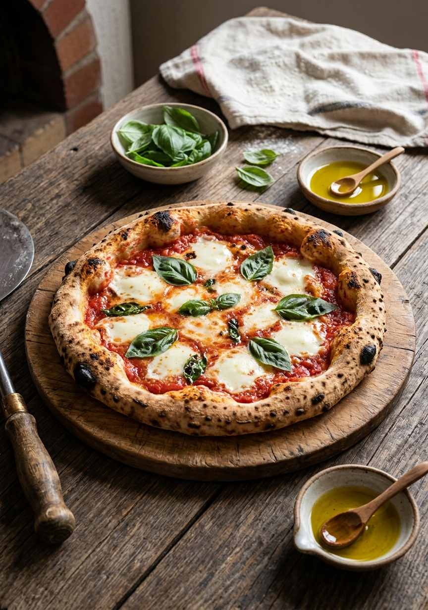
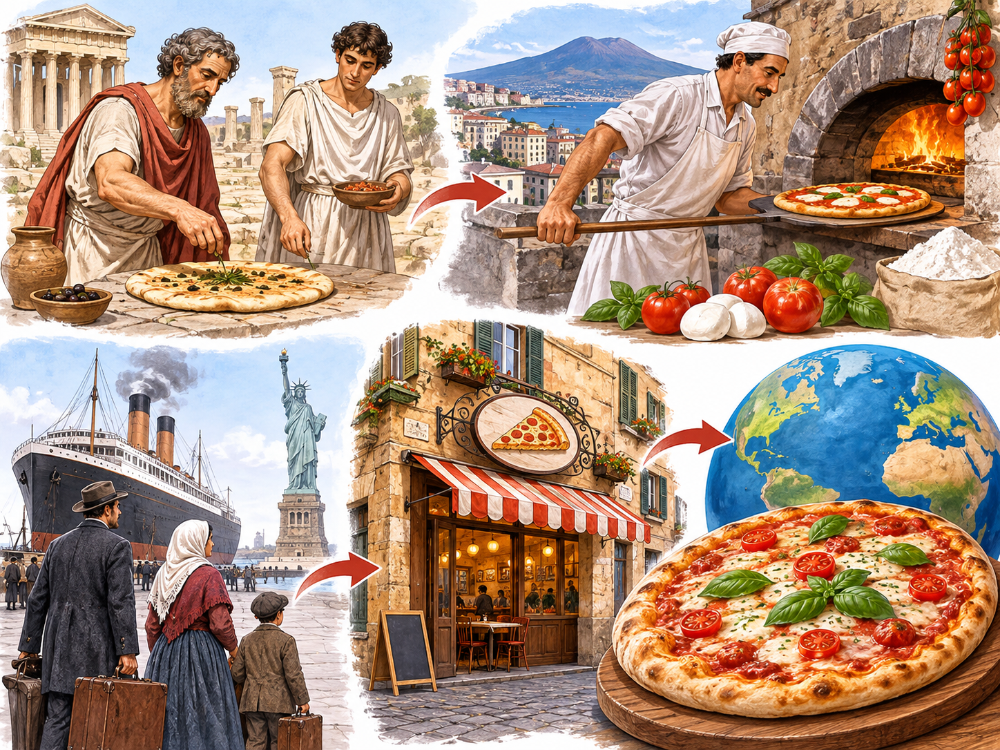
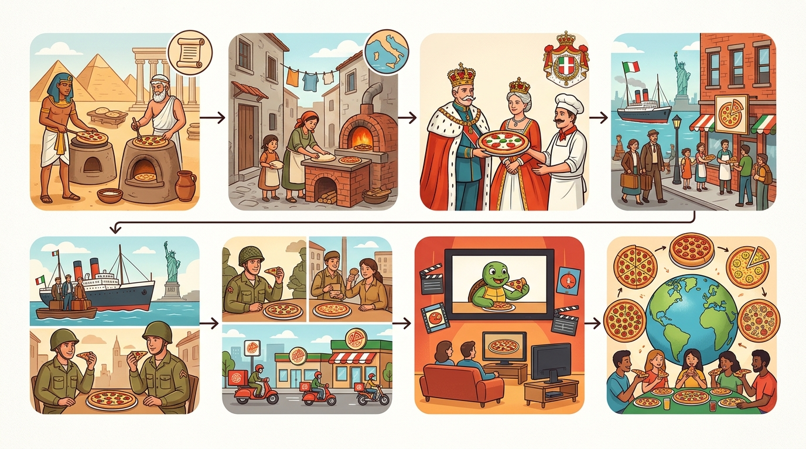
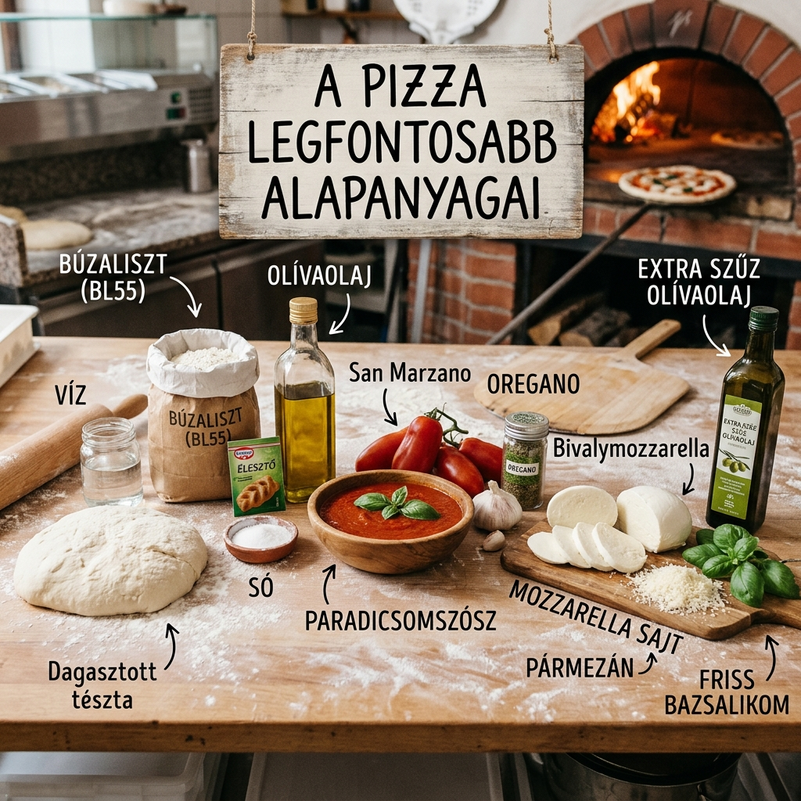
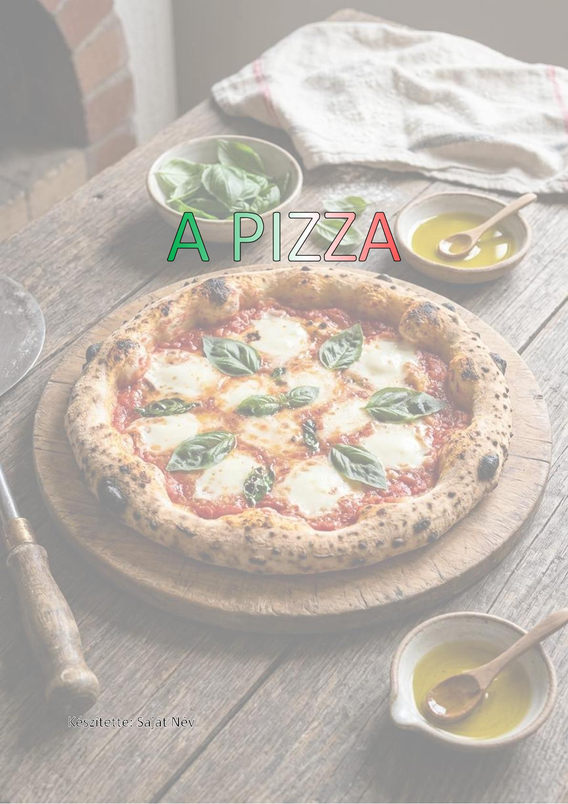
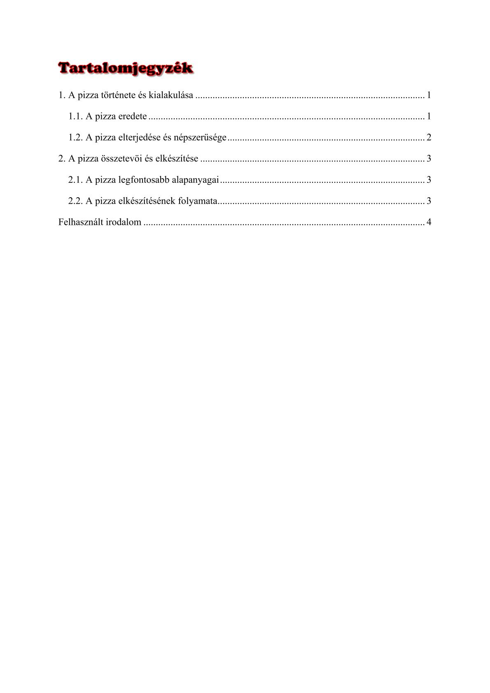
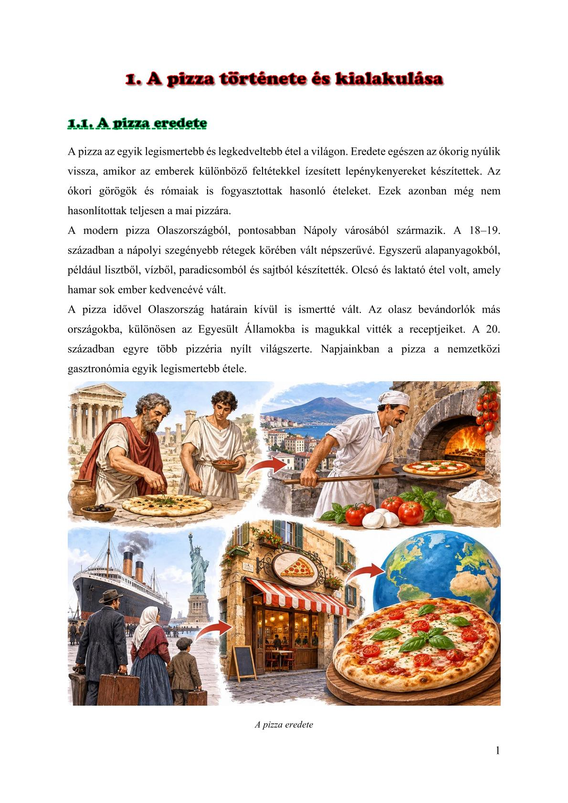
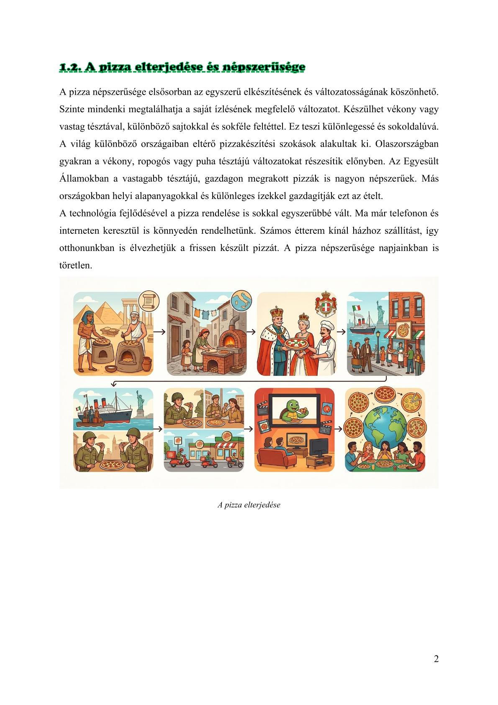
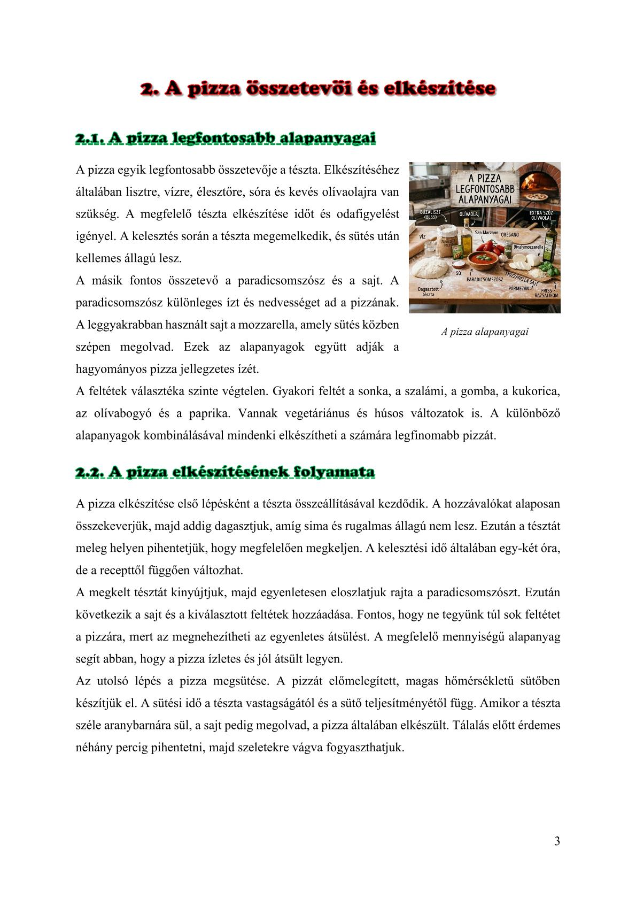
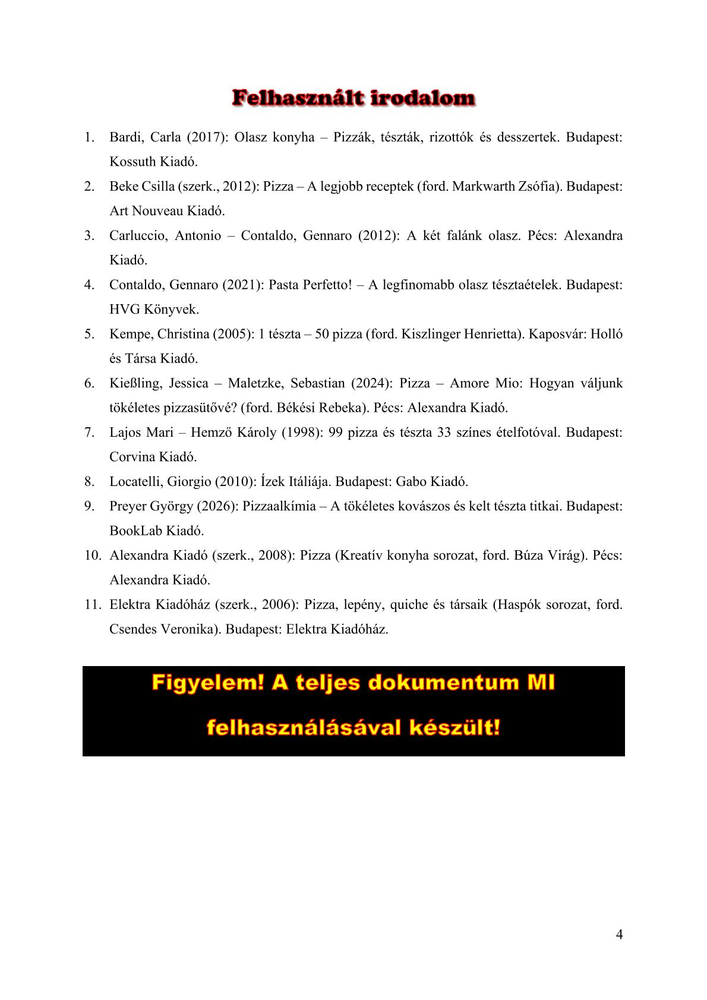

A PIZZA

1. A pizza története és kialakulása
1.1 A pizza eredete
A pizza az egyik legismertebb és legkedveltebb étel a világon. Eredete egészen az ókorig nyúlik vissza, amikor az emberek különböző feltétekkel ízesített lepénykenyereket készítettek. Az ókori görögök és rómaiak is fogyasztottak hasonló ételeket. Ezek azonban még nem hasonlítottak teljesen a mai pizzára.
A modern pizza Olaszországból, pontosabban Nápoly városából származik. A 18–19. században a nápolyi szegényebb rétegek körében vált népszerűvé. Egyszerű alapanyagokból, például lisztből, vízből, paradicsomból és sajtból készítették. Olcsó és laktató étel volt, amely hamar sok ember kedvencévé vált.
A pizza idővel Olaszország határain kívül is ismertté vált. Az olasz bevándorlók más országokba, különösen az Egyesült Államokba is magukkal vitték a receptjeiket. A 20. században egyre több pizzéria nyílt világszerte. Napjainkban a pizza a nemzetközi gasztronómia egyik legismertebb étele.

1.2 A pizza elterjedése és népszerűsége
A pizza népszerűsége elsősorban az egyszerű elkészítésének és változatosságának köszönhető. Szinte mindenki megtalálhatja a saját ízlésének megfelelő változatot. Készülhet vékony vagy vastag tésztával, különböző sajtokkal és sokféle feltéttel. Ez teszi különlegessé és sokoldalúvá.
A világ különböző országaiban eltérő pizzakészítési szokások alakultak ki. Olaszországban gyakran a vékony, ropogós vagy puha tésztájú változatokat részesítik előnyben. Az Egyesült Államokban a vastagabb tésztájú, gazdagon megrakott pizzák is nagyon népszerűek. Más országokban helyi alapanyagokkal és különleges ízekkel gazdagítják ezt az ételt.
A technológia fejlődésével a pizza rendelése is sokkal egyszerűbbé vált. Ma már telefonon és interneten keresztül is könnyedén rendelhetünk. Számos étterem kínál házhoz szállítást, így otthonunkban is élvezhetjük a frissen készült pizzát. A pizza népszerűsége napjainkban is töretlen.

2. A pizza összetevői és elkészítése
2.1 A pizza legfontosabb alapanyagai
A pizza egyik legfontosabb összetevője a tészta. Elkészítéséhez általában lisztre, vízre, élesztőre, sóra és kevés olívaolajra van szükség. A megfelelő tészta elkészítése időt és odafigyelést igényel. A kelesztés során a tészta megemelkedik, és sütés után kellemes állagú lesz.
A másik fontos összetevő a paradicsomszósz és a sajt. A paradicsomszósz különleges ízt és nedvességet ad a pizzának. A leggyakrabban használt sajt a mozzarella, amely sütés közben szépen megolvad. Ezek az alapanyagok együtt adják a hagyományos pizza jellegzetes ízét.
A feltétek választéka szinte végtelen. Gyakori feltét a sonka, a szalámi, a gomba, a kukorica, az olívabogyó és a paprika. Vannak vegetáriánus és húsos változatok is. A különböző alapanyagok kombinálásával mindenki elkészítheti a számára legfinomabb pizzát.

2.2 A pizza elkészítésének folyamata
A pizza elkészítése első lépésként a tészta összeállításával kezdődik. A hozzávalókat alaposan összekeverjük, majd addig dagasztjuk, amíg sima és rugalmas állagú nem lesz. Ezután a tésztát meleg helyen pihentetjük, hogy megfelelően megkeljen. A kelesztési idő általában egy-két óra, de a recepttől függően változhat.
A megkelt tésztát kinyújtjuk, majd egyenletesen eloszlatjuk rajta a paradicsomszószt. Ezután következik a sajt és a kiválasztott feltétek hozzáadása. Fontos, hogy ne tegyünk túl sok feltétet a pizzára, mert az megnehezítheti az egyenletes átsülést. A megfelelő mennyiségű alapanyag segít abban, hogy a pizza ízletes és jól átsült legyen.
Az utolsó lépés a pizza megsütése. A pizzát előmelegített, magas hőmérsékletű sütőben készítjük el. A sütési idő a tészta vastagságától és a sütő teljesítményétől függ. Amikor a tészta széle aranybarnára sül, a sajt pedig megolvad, a pizza általában elkészült. Tálalás előtt érdemes néhány percig pihentetni, majd szeletekre vágva fogyaszthatjuk.
Felhasznált irodalom
- Bardi, Carla (2017): Olasz konyha – Pizzák, tészták, rizottók és desszertek. Budapest: Kossuth Kiadó.
- Beke Csilla (szerk., 2012): Pizza – A legjobb receptek (ford. Markwarth Zsófia). Budapest: Art Nouveau Kiadó.
- Carluccio, Antonio – Contaldo, Gennaro (2012): A két falánk olasz. Pécs: Alexandra Kiadó.
- Contaldo, Gennaro (2021): Pasta Perfetto! – A legfinomabb olasz tésztaételek. Budapest: HVG Könyvek.
- Kempe, Christina (2005): 1 tészta – 50 pizza (ford. Kiszlinger Henrietta). Kaposvár: Holló és Társa Kiadó.
- Kießling, Jessica – Maletzke, Sebastian (2024): Pizza – Amore Mio: Hogyan váljunk tökéletes pizzasütővé? (ford. Békési Rebeka). Pécs: Alexandra Kiadó.
- Lajos Mari – Hemző Károly (1998): 99 pizza és tészta 33 színes ételfotóval. Budapest: Corvina Kiadó.
- Locatelli, Giorgio (2010): Ízek Itáliája. Budapest: Gabo Kiadó.
- Preyer György (2026): Pizzaalkímia – A tökéletes kovászos és kelt tészta titkai. Budapest: BookLab Kiadó.
- Alexandra Kiadó (szerk., 2008): Pizza (Kreatív konyha sorozat, ford. Búza Virág). Pécs: Alexandra Kiadó.
- Elektra Kiadóház (szerk., 2006): Pizza, lepény, quiche és társaik (Haspók sorozat, ford. Csendes Veronika). Budapest: Elektra Kiadóház.





